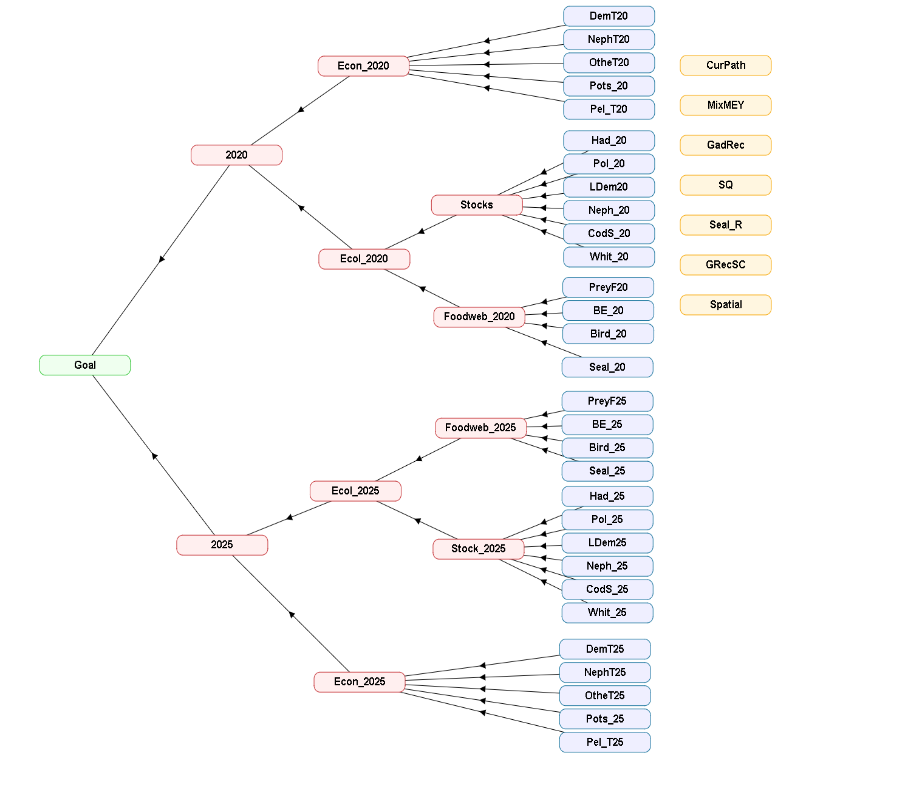
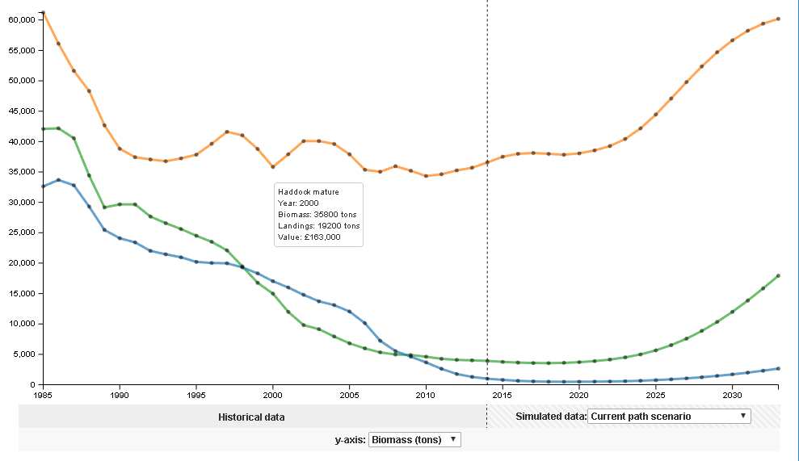

Decision Support Framework
Decision Support Framework

The MareFrame Decision Support Framework is a pragmatic planning process for moving towards an Ecosystem Approach to Fisheries Management. Click on the map of Europe to the left to see all case studies. Please review the case study and select the Multi-Criteria Analysis or Bayesian Belief Network below.

Case Study: West Coast of Scotland
Objective: To achieve an advantageous and economically and sustainable fisheries through a multispecies approach that addresses environmental concerns.
Management Problem
The main problem that has identified by stakeholders and researchers is that the spawning stock biomass of cod and whiting have declined to the lowest levels seen in available data series. This is in spite of fisheries management measures aiming to achieve recovery. Such measures include a cod recovery plan (2009) and a zero TAC for cod (except for a 1.5% bycatch limit) that has been in place since 2012. The bycatch limit applies only to landed fish and does not constrain discards of cod. The discards mainly stem from mixed demersal trawl fisheries and for Norway lobster, respectively. In addition, it has been suggested that seal predation on small cod individuals could impair recovery of the cod stock (Cook et. al., 2015). From 2016, the main commercial species will be subjected to an “obligation to land all catches”, which may involve severe negative consequences for the industry (at least in in the short term) due to the so-called “choke species problem”.
Management Setting:
The governance of marine resources and the environment in the VIa area is complex and involves institutional arrangements and agencies at both national (UK and Scotland) and international (EU) levels. The fisheries are managed under the Common Fisheries Policy while environmental aspects are mainly managed under the Marine Strategy Framework Directive. UK and Scotland are responsible for implementing fisheries and environmental management measures in the near shore areas. The fisheries in VIa are dominated by Scotland although other countries such (mainly France and Ireland) also are participating.
Main objectives and criteria:
A management proposal for the case study will be evaluated in relation to a set of objectives and criteria (see the list below). Some criteria are derived from the main polices that apply to the case study (the CFP and the MSFD). For instance, the CFP requires that the spawning stock biomass (SSB) of any commercial fish stock should be at or above the level consistent with a Maximum Sustainable Yield (MSY) no later than the year 2020.
| Objectives for the mangement plan proposal | Candidate operational objectives and indicators |
|---|---|
| Recovery of the cod stock | Cod SSB ≥ 22.000 t (Bpa) by the end of the planning period |
| Recovery of the whiting stock | Whiting SSB ≥ = 22 000 t (Bpa) by the end of planning period |
| Ensure strong economic performance of demersal fisheries | An optimum combination of Multispecies Maximum Economic Yields of key demersal species is suggested An optimum balance between shrimp and whitefish is suggested |
| Healthy commercial fish stocks | All commercial stocks ≥ Blim by end of planning period All commercial stocks ≤ Flim by end of planning period At least 75% commercial stocks ≥ SBB MSY or: 95% commercial stocks ≥ SSB MMSY (if defined) by end of planning period |
| Maintain foodweb integrity | The Large Fish Indicator (relative weight of large fish in catches) > 0,4 by end of planning period Mean trophic level ≥ value in starting year by end of planning period |
Multi-Criteria Analysis

MCA with set priorities
MCA without set priorities
MCA with previous model outcomes and set priorities
Scenario Model output

Management Scenarios
Generic management alternatives were defined based on meetings with stakeholders. The alternatives (MCA short names in parenthesis), their rationale, model approach and limitations are described. NB! Two scenarios (marked with *) involve seal culling and were only included to assess the effect of seal predation on the recovery of cod and whiting for research purposes, they are not regarded as management alternatives.
| Alternative | Rationale | Modeling approach and limitations |
|---|---|---|
| Fmsy | Baseline for comparing alternatives. Reflects MSY as a main policy goal of CFP, but does not consider aspects of Landing Obligations such as choke species. Argument for scenario revision: Better alignment between scenario name, rationale and modelling approach. | Set F at FMSY for all species (or at best available FMSY proxy. |
| Mixed MEY (MixMEY) | There is an inconsistency between the requirements of the Landings Obligation, the objective of a sustainable economy, and MSY (this is due to the choke species issues). Hence this alternative involves:
Argument for scenario revision: F-ranges provide more flexibility and hence increased the space within which MEY candidates can be found. |
Seek MEY candidate within the constraints of F-ranges.
Keep F for nephrops at current level. Keep F for cod and whiting as low as it is it practically considered possible consistent with not reducing Fs for fisheries with these species as bycatch. Reduce F for haddock to mimic effort to avoid bycatches of cod and whiting. Explore F-ranges for remaining species targeted by demersal fleet. Argument for revised modeling approach: it is difficult to increase F for nephrops, and this may involve increased risks of catching juvenile cod and whiting individuals. |
| Spatial F | To promote recovery of cod and whiting whilst avoiding discards based on geographic considerations of fishing pressure. | Saithe, hake and monkfish (mainly located on the shelf edge) are fished at the lowest Fmsy between these species. F-range values will be explored. |
| Gadoid recovery | Scenarios examining the potential for cod and whiting recovery by combining elements of a) fishing saithe at upper F range (F=0.43) and b) seal cull with a closure of targeted fisheries for cod and whiting while accepting present level of cod bycatch.
Argument for scenario revision: Saithe has been found to be a significant predator on cod. |
Apply Fmsy values for all species except for cod, whiting and saithe for which various levels of F will be tested.
Repeat as above with the addition of the seal cull |
| Status quo (SQ) | Alternative baseline: what happens if present fishing mortalities continue? | F at F2013 for all groups |
Click Here to download the output data from the model as .CSV files
- ^ Heath, M. R. et al. 2014. Combination of genetics and spatial modelling highlights the sensitivity of cod (Gadus morhua) population diversity in the North Sea to distributions of fishing. ICES Journal of Marine Science, 71: 794-807.
Wright, P. J., Galley, E., Gibb, I. M., and Neat, F. C. 2006. Fidelity of adult cod to spawning grounds in Scottish waters. Fisheries Research, 77: 148-158.
Wright, P. J., Neat, F. C., Gibb, F. M., Gibb, I. M., and Thordarson, H. 2006. Evidence for metapopulation structuring in cod from the west of Scotland and North Sea. Journal of Fish Biology, 69: 181-199.